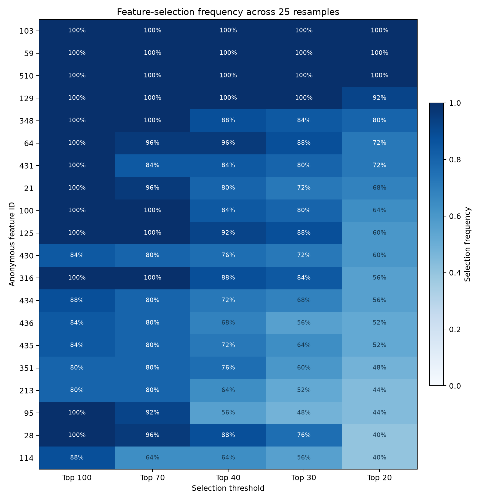
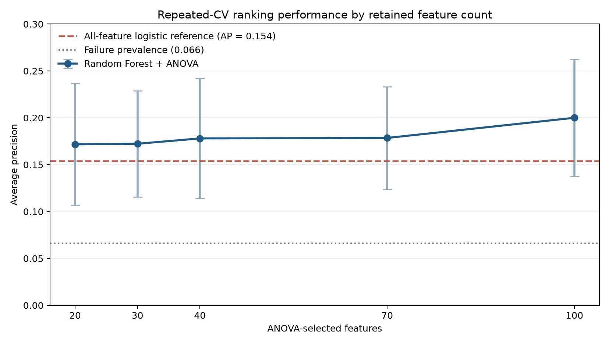

Applied machine learning · Semiconductor manufacturing
From 590 process signals to five investigation priorities.
A reproducible feature-screening study of rare manufacturing failures in the public SECOM dataset—designed to support engineering investigation, not overstate root cause.
- Observations
- 1,567
- Failures
- 104 · 6.6%
- Validation
- 25 resamples
- Final output
- Tiered shortlist
The objective was not another accuracy score.
Semiconductor datasets are wide, noisy, incomplete, and operationally dependent. This study asks a more useful question: which anonymous measurements remain important when the training sample changes, and which deserve attention from an engineer who has the missing process context?
The analysis combined data-quality screening, exploratory statistics, several feature selection methods, imbalanced classification metrics, and repeated cross-validation. The result is a defensible investigation hierarchy—not a causal diagnosis and not a production-ready failure detector.
Evidence 01 · Feature stability
Three signals survived every top-20 selection.
ANOVA feature selection was relearned inside each of 25 repeated validation resamples. Frequency measures reproducibility under sampling—not causality.

Investigation shortlist
Start with the evidence that repeats.
The five core variables balance strong univariate separation with reproducible top-20 selection. Their anonymous IDs are useful only after they are mapped to real sensors, units, tools, and process stages.
- 01103100% top-20 stability · RF rank 1
- 0259100% top-20 stability · RF rank 2
- 03510100% top-20 stability · RF rank 8
- 0412992% top-20 stability
- 0534880% top-20 stability
Evidence 02 · Predictive representation
Useful ranking signal, insufficient failure detection.
The 100-feature Random Forest provided the strongest tested Random Forest ranking. At the default threshold, however, it detected only about 2% of failures.

- Average precision
- 0.200 ± 0.063
- Failure prevalence
- 0.066
- Failure recall
- 0.020
- False-negative rate
- 0.980
Method
A leakage-aware path from raw signals to stable candidates.
- 01
Audit
Profile class balance, missingness, constants, rare states, skew, and redundancy.
- 02
Reduce
Remove 116 constant, six near-constant, and eight greater-than-80%-missing variables.
- 03
Compare
Evaluate ANOVA, mutual information, Random Forest importance, RFE, correlation pruning, and PCA.
- 04
Validate
Learn imputation and selection inside stratified folds and prioritize rare-failure metrics.
- 05
Stabilize
Repeat selection across 25 resamples and rank candidates by reproducibility.
PCA required 164 components to retain 95% of the training variance, and its first two components explained only 9.34%. The data has redundancy, but no simple low-dimensional failure boundary.
Boundaries of the evidence
Statistical importance is an invitation to investigate—not proof of root cause.
- Anonymous measurements. No sensor names, units, process stages, tools, chambers, recipes, or control limits are available.
- Rare failures. Only 104 failures exist in the full dataset, so failure estimates remain uncertain.
- Observational evidence. Association does not establish that changing a variable would improve yield.
- No final operating threshold. A confusion matrix would be arbitrary until an alert threshold and cost tradeoff are defined.
- Independent validation remains necessary. The cleanest confirmation would use a later manufacturing period or a separate cohort.
What should happen when process context becomes available?
- Map features 103, 59, 510, 129, and 348 to physical measurements and process steps.
- Compare their behavior by tool, chamber, recipe, product, lot, wafer position, and time.
- Determine whether correlated signals are duplicate sensors, linked stages, or responses to a shared process condition.
- Freeze the analysis and validate it on temporally later production data.
Open analysis
Inspect every decision, notebook, and result.
The repository contains the full analysis notebook, phase-by-phase reasoning, model evaluation log, final report, and reproducible figure generation.